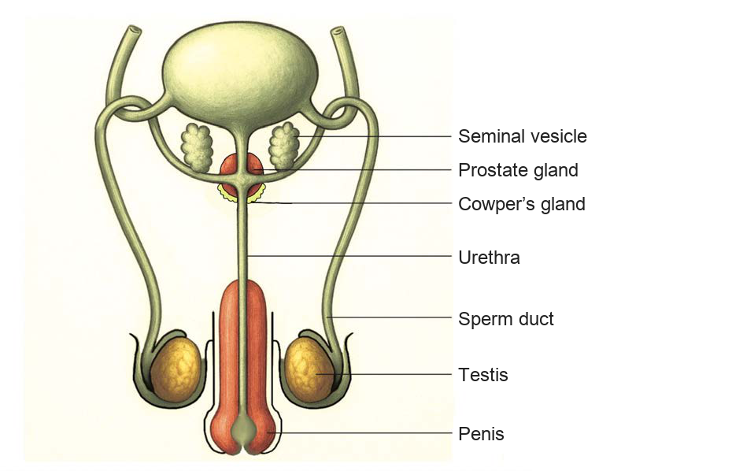

Human reproductive system
Watch/Listen to an online video on the male and female reproductive systems. Then, write a brief description of all the organs that make up these systems and the function of each organ.
Male reproductive system
The male reproductive system consists of the external and internal structures. The external structures include the penis and testes. The internal structures consist of the sperm ducts, the urethra, the seminal vesicles, the prostate gland, and the Cowper’s glands. Figure 1 shows different parts of the male reproductive system.

Seminal vesicleProstate glandCowper’s glandUrethraSperm ductTestisPenis